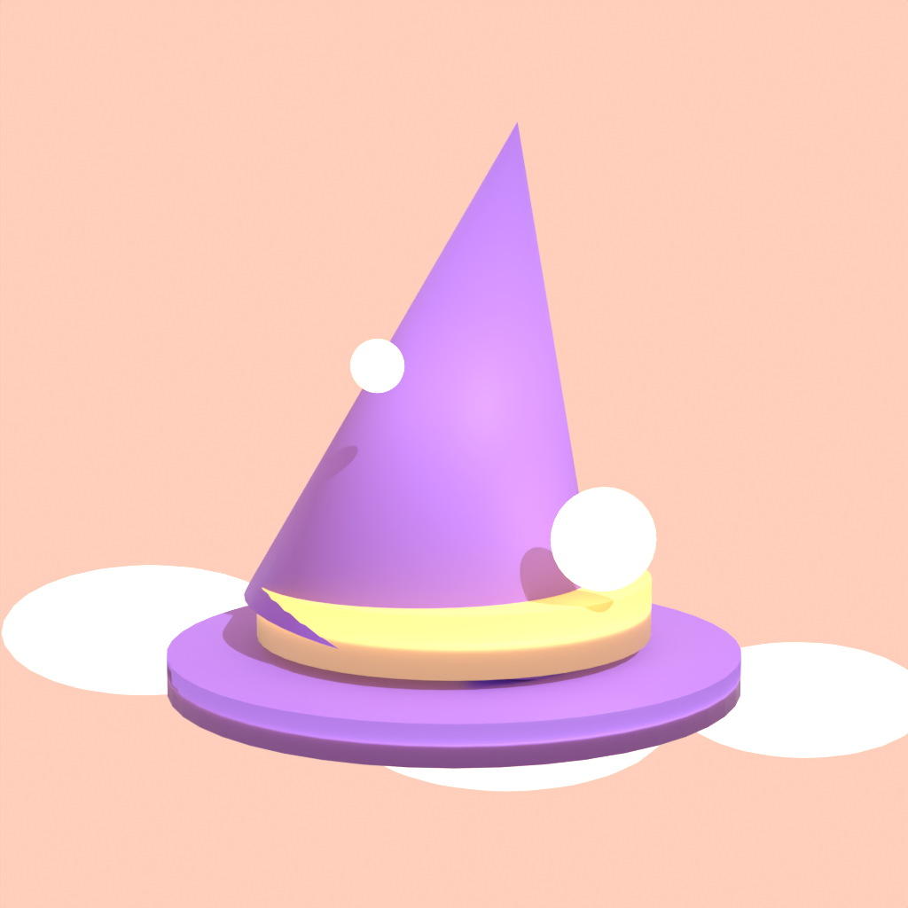
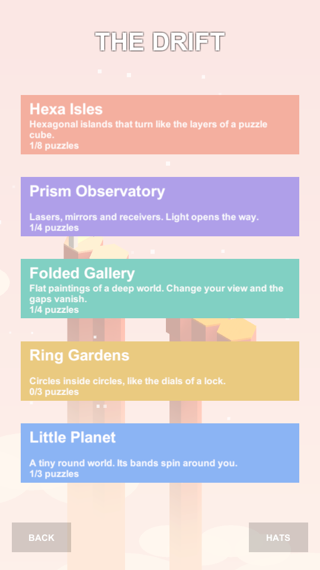
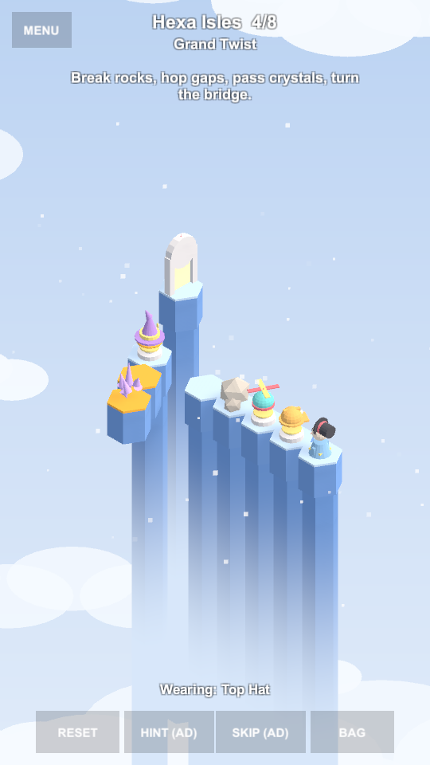
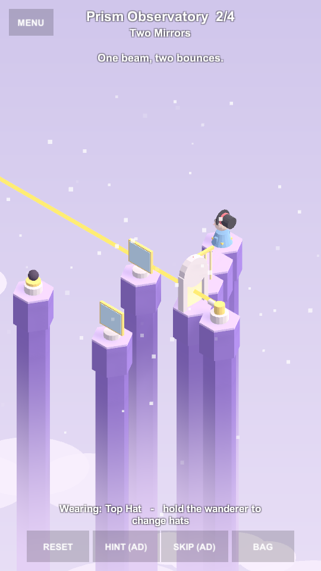
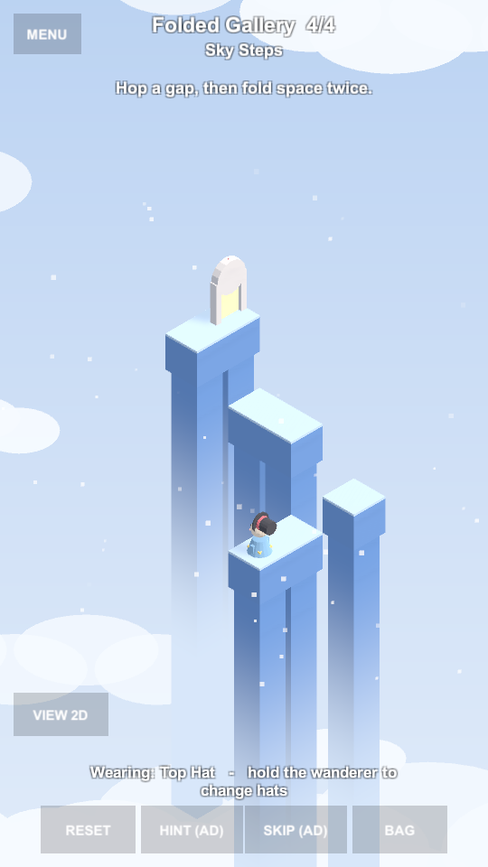
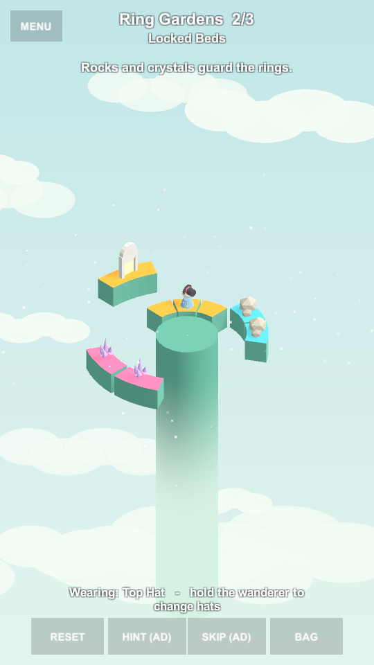
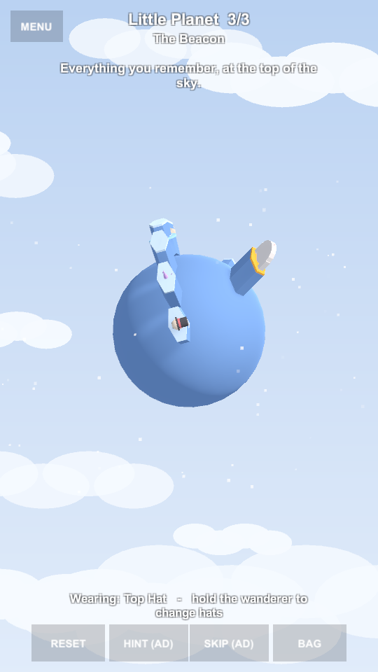

Hat Wanderer
A calm one-finger isometric puzzle game. Prototype in development.
You wake on a cloud with a bare head and no name. Every hat you find is a memory, and a power. Turn islands and rings like the layers of a puzzle cube, steer lasers with mirrors and prisms, flatten the world into 2D to cross impossible gaps, and spin a tiny planet under your feet.






Features
- 22 hand-built puzzles across 5 worlds, each proven solvable by an automated solver
- 7 collectable hats with abilities: pass crystals, hop gaps, smash boulders, split beams, climb ledges, walk on water
- One-finger controls: tap to walk, drag to turn, hold the wanderer for a hat wheel
- Rotating hex islands, concentric rings and a spherical world; lasers, mirrors and prisms; Fez-style 2D/3D perspective shifts
- Soft atmosphere with procedural music and sound
Built with
Unity 6 (C#), 3D assets and animation generated with Blender scripting, custom BFS solver for level validation and hints. Android build available.